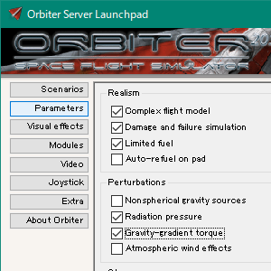

Realism（リアリズム）とPerturbations（摂動）
RealismとPerturbationsの設定について説明します。
LaunchpadのParametersをクリック。
チェックを入れると有効、外すと無効になる。

Realism（リアリズム）
Complex flight model（複雑なフライトモデル）
大気圏内での挙動に影響する。
これが有効になっていると、金星に降りたときに大気圧の関係でエンジンを点火しても推力が得られず、宇宙に戻れなくなる。
Damage and failure simulation（ダメージ・故障のシミュレーション）
再突入などにおいて、機体が壊れて操縦不能になることがある。
Limited fuel（有限の燃料）
燃料が減らなくなる。
機体が軽くならないということでもあるので、かえって難しくなることも。
Auto-refuel on pad（パッドでの自動燃料補給）
パッド（円形の着陸場）に降りると、自動的に燃料が満タンになる。
無補給で月まで往復したい場合などでは切っておこう。
Perturbations（摂動）
Nonspherical gravity sources（非球対称な重力源）
惑星の重力が非球対称になる。
具体的には、一部MFDの表示が不正確になる。
現実の地球は単純な球体ではない（赤道付近が膨らんでいる）ので、重力にもごくわずかながらばらつきがある。
MFDは現時点のデータをもとに、地球が完全な球体であると仮定して計算するので、結果に誤差が生じる。
ちなみに、このオプションを有効にすると、太陽同期軌道を再現することもできる。
Radiation pressure（輻射圧）
太陽の輻射圧の影響を再現する。
太陽帆船が動いたりする。
Gravity-gradient torque（重力勾配トルク）
周回軌道上の物体に、回転させるような力が働く。
これを応用して、宇宙船の姿勢・軌道を変化させることもできる。
Atmospheric wind effects（大気圏内での風）
地球などの大気圏内で風が吹くようになる。
打ち上げや大気圏内での飛行中に、機体が風に流されることがある。
Orbiter2016で実装された。